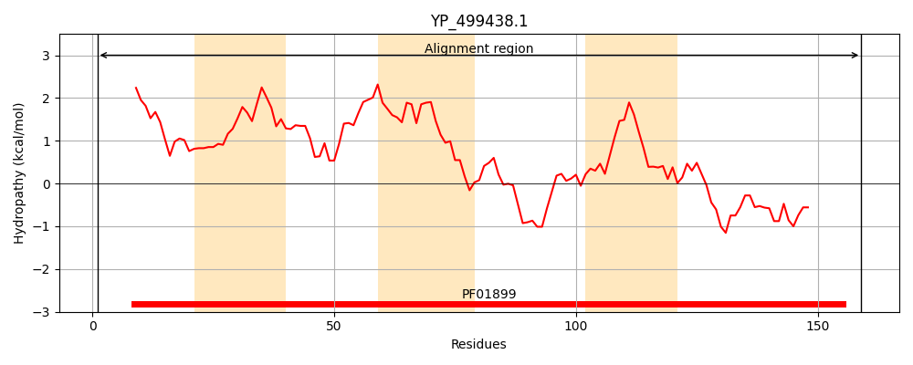
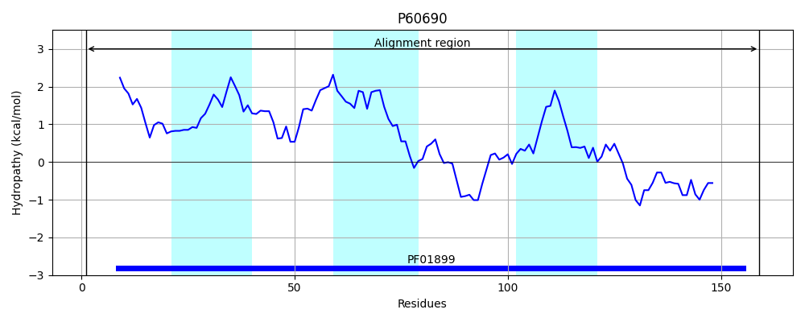
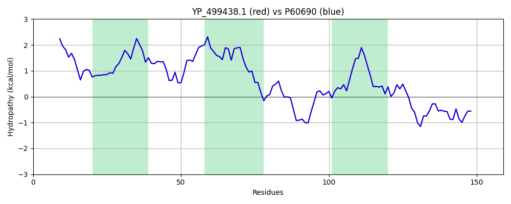

Hit Accession: P60690
Hit TCID: 2.A.63.1.3
Hit Description: gnl|BL_ORD_ID|11126 gnl|TC-DB|P60690|2.A.63.1.3 Na(+)/H(+) antiporter subunit E - Staphylococcus aureus.
Mach Len: 159
e:0.000000
Query TMS Count : 3
Hit TMS Count: 3
TMS-Overlap Score: 3.050000
Predicted Substrates:CHEBI:9175;sodium(1+), CHEBI:5584;hydron
BLAST Alignment:
Score: 795 , Bit scores: 310 bits, E-value: 1.3e-110, Alignment length: 159, Percentage identity: 100
Query: 1 MAVQLVLNFIIAVFWLFVTNSYTTNNFVLGFIFGLVLVYLLHRVLPGRFYVITLYRIIKLVIIFLIELIKANFDVLKIIIKPSIKNEPGFFVYHTDLKKDWQIVLLSNLITLTPGTVVLGVSDDRTKIYIHAIDFSTKEQEVESIKTSLEKIVREVGEI 159
MAVQLVLNFIIAVFWLFVTNSYTTNNFVLGFIFGLVLVYLLHRVLPGRFYVITLYRIIKLVIIFLIELIKANFDVLKIIIKPSIKNEPGFFVYHTDLKKDWQIVLLSNLITLTPGTVVLGVSDDRTKIYIHAIDFSTKEQEVESIKTSLEKIVREVGEI
Sbjct: 1 MAVQLVLNFIIAVFWLFVTNSYTTNNFVLGFIFGLVLVYLLHRVLPGRFYVITLYRIIKLVIIFLIELIKANFDVLKIIIKPSIKNEPGFFVYHTDLKKDWQIVLLSNLITLTPGTVVLGVSDDRTKIYIHAIDFSTKEQEVESIKTSLEKIVREVGEI 159 | Protein Hydropathy Plots: |
|---|
|  |  |
Pairwise Alignment-Hydropathy Plot:
|
|---|
|  |